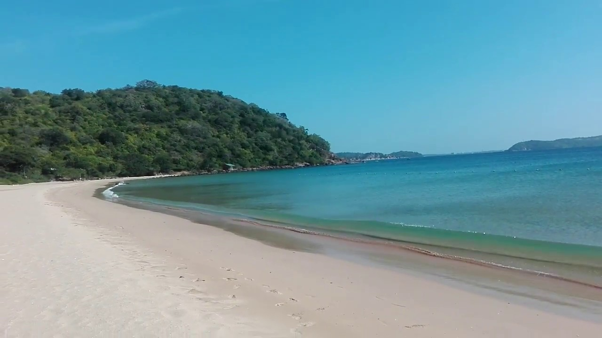

Marble Beach

Marble Beach
Public beach is popular among visitors as the Trincomalee Beach. This is a nice beach with a view of Trincomalee fort. You can have a safe bath here and glass bottom boat rides also available for awesome experience.
Trincomalee Harbour
Trincomalee Harbour is a seaport in Trincomalee Bay or Koddiyar Bay, a large natural harbour situated on the northeastern coast of Sri Lanka. Located by Trincomalee, Sri Lanka, in the heart of the Indian Ocean, its strategic importance has shaped its history. There have been many sea battles to control the harbour.